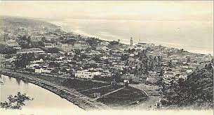

History of Visakhapatnam
Visakhapatnam, or Vizag, is a historic coastal city in Andhra Pradesh, India, with a rich cultural and trade legacy. It was once part of the ancient Kalinga Kingdom and later influenced by the Chola and Gajapati Dynasties. During British rule, it became an important port for trade and industries. Post-independence, Visakhapatnam grew into a major industrial and naval hub, known for its steel plants, power units, and the Indian Navy base. Today, it remains a blend of heritage, modernity, and natural beauty.
Early History
Visakhapatnam traces its history back to ancient times, with records of it being part of the Kalinga Kingdom. Over centuries, it saw the rise and fall of several empires such as the Cholas, the Gajapati Kings, and eventually, the British, each leaving their mark on the city’s architecture, culture, and economy.
Colonial Era
During British rule, Visakhapatnam emerged as a key port for maritime trade, with its location being ideal for shipping activities. The city saw industrial developments during the British era, with the establishment of various factories and ports that helped in trade.
Post-Independence
Post-independence, Visakhapatnam became a major industrial hub, thanks to the establishment of the Visakhapatnam Steel Plant and various power plants. The city also became home to one of India’s major naval bases, enhancing its strategic importance. Today, Visakhapatnam stands as a modern city while retaining its rich heritage.